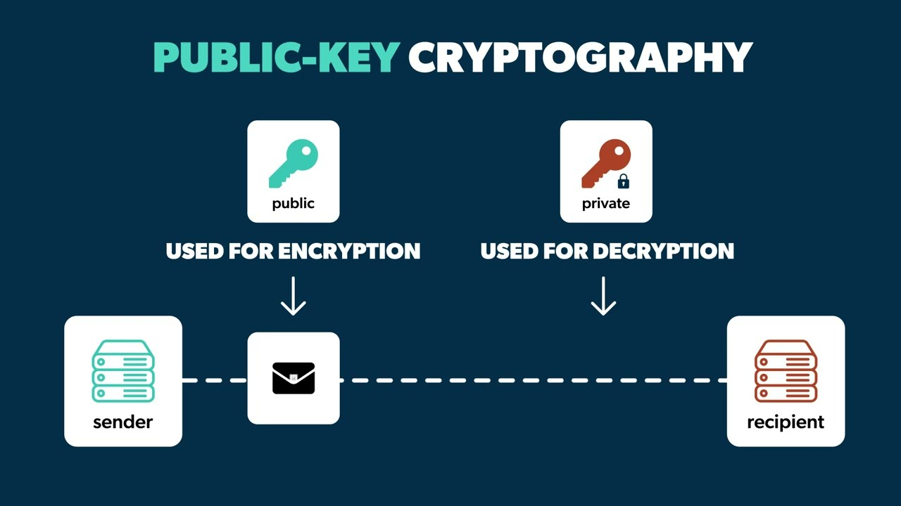

ČO JE VEREJNÝ KĽÚČ?
Verejný kľúč je dostupný ostatným používateľom a spolupracuje so súkromným kľúčom na zabezpečení bezpečnej komunikácie. Pomáha šifrovať údaje, overovať pravosť podpisu a zabezpečiť, aby počas prenosu neboli zmenené alebo zneužité.
Ktokoľvek s prístupom k vášmu verejnému kľúču môže overiť, či je vaša správa autentická, bez toho, aby poznal váš tajný súkromný kľúč.
AKÉ SÚ DÔLEŽITÉ VLASTNOSTI VEREJNÉHO KĽÚČA?
- Verejné kľúče sú dôležitou súčasťou asymetrického šifrovania. Umožňujú bezpečne šifrovať údaje tak, aby ich bolo možné dešifrovať iba pomocou zodpovedajúceho súkromného kľúča. Vďaka tomu pomáhajú chrániť citlivé informácie pred neoprávneným prístupom.
- Verejné kľúče sa používajú na overovanie digitálnych podpisov vytvorených súkromným kľúčom. Pomáhajú potvrdiť pravosť odosielateľa a zabezpečujú, že dokument alebo správa neboli počas prenosu zmenené.
- Verejné kľúče zohrávajú dôležitú úlohu pri vytváraní dôvery v online komunikácii. Používajú sa napríklad pri internet bankingu, online platbách, elektronických podpisoch alebo zabezpečených webových stránkach. Pomocou verejného kľúča sa overuje pravosť digitálneho podpisu a kontroluje sa, či údaje neboli počas prenosu zmenené.
- Verejné kľúče je možné jednoducho zdieľať medzi používateľmi bez ohrozenia bezpečnosti. Sú podporované na rôznych zariadeniach a platformách, čo umožňuje bezpečnú a spoľahlivú komunikáciu na internete. Môže nachádzať napríklad v digitálnych certifikátoch, na zabezpečených webových stránkach, v e-mailových systémoch...

Späť na elektronický podpis